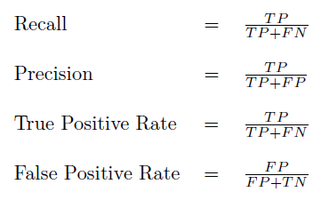
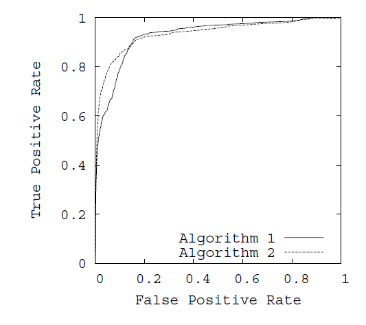
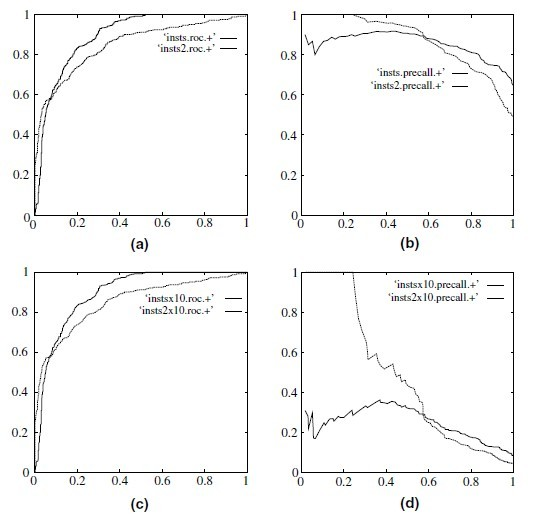

在机器学习中，ROC（Receiver Operator Characteristic）曲线被广泛应用于二分类问题中来评估分类器的可信度，但是当处理一些高度不均衡的数据集时，PR曲线能表现出更多的信息，发现更多的问题。
1.ROC曲线和PR曲线是如何画出来的？
在二分类问题中，分类器将一个实例的分类标记为是或否，这可以用一个混淆矩阵来表示。混淆矩阵有四个分类，如下表：
| actual positive | actual negative | |
| predicted positive | TP | FP |
| predicted negative | FN | TN |
其中，列对应于实例实际所属的类别，行表示分类预测的类别。
- TP（True Positive）：指正确分类的正样本数，即预测为正样本，实际也是正样本。
- FP（False Positive）：指被错误的标记为正样本的负样本数，即实际为负样本而被预测为正样本，所以是False。
- TN（True Negative）：指正确分类的负样本数，即预测为负样本，实际也是负样本。
- FN（False Negative）：指被错误的标记为负样本的正样本数，即实际为正样本而被预测为负样本，所以是False。
- TP+FP+TN+FN：样本总数。
- TP+FN：实际正样本数。
- TP+FP：预测结果为正样本的总数，包括预测正确的和错误的。
- FP+TN：实际负样本数。
- TN+FN：预测结果为负样本的总数，包括预测正确的和错误的。
这里面的概念有些绕，需要慢慢理解，/(ㄒoㄒ)/~~。以这四个基本指标可以衍生出多个分类器评价指标，如下图：

在ROC曲线中，以FPR为x轴，TPR为y轴。FPR指实际负样本中被错误预测为正样本的概率。TPR指实际正样本中被预测正确的概率。如下图：

在PR曲线中，以Recall（貌似翻译为召回率或者查全率）为x轴，Precision为y轴。Recall与TPR的意思相同，而Precision指正确分类的正样本数占总正样本的比例。如下图：
曲线的联系_SEAN是一只程序猿_files/38381443447279.png)
绘制ROC曲线和PR曲线都是选定不同阈值，从而得到不同的x轴和y轴的值，画出曲线。例如，一个分类算法，找出最优的分类效果，对应到ROC空间中的一个点。通常分类器输出的都是score，如SVM、神经网络等，有如下预测效果：
| no. | True | Hyp(0.5) | Hyp(0.6) | Score |
| 1 | p | Y | Y | 0.99999 |
| 2 | p | Y | Y | 0.99999 |
| 3 | p | Y | Y | 0.99993 |
| 4 | p | Y | Y | 0.99986 |
| 5 | p | Y | Y | 0.99964 |
| 6 | p | Y | Y | 0.99955 |
| 7 | n | Y | Y | 0.68139 |
| 8 | n | Y | N | 0.50961 |
| 9 | n | N | N | 0.48880 |
| 10 | n | N | N | 0.44951 |
True表示实际样本属性，Hyp表示预测结果样本属性，第4列即是Score，Hyp的结果通常是设定一个阈值，比如上表Hyp(0.5)和Hyp(0.6)就是阈值为0.5和0.6时的结果，Score>阈值为正样本，小于阈值为负样本，这样只能算出一个ROC值，
当阈值为0.5时，TPR=6/(6+0)=1，FPR=FP/(FP+TN)=2/(2+2)=0.5,得到ROC的一个坐标为（0.5,1）；Recall=TPR=1，Precision=6/(6+2)=0.75，得到一个PR曲线坐标(1,0.75)。同理得到不同阈下的坐标，即可绘制出曲线
| 阈值 | TPR | FPR | Recall | Precision | ROC坐标 | PR坐标 |
| 0.5 | 1 | 0.5 | 1 | 0.75 | (0.5,1) | (1,0.75) |
| 0.6 | 1 | 0.25 | 1 | 0.86 | (0.25,1) | (1,0.86) |
2.ROC曲线和PR曲线的关系
在ROC空间，ROC曲线越凸向左上方向效果越好。与ROC曲线左上凸不同的是，PR曲线是右上凸效果越好。
ROC和PR曲线都被用于评估机器学习算法对一个给定数据集的分类性能，每个数据集都包含固定数目的正样本和负样本。而ROC曲线和PR曲线之间有着很深的关系。
定理1：对于一个给定的包含正负样本的数据集，ROC空间和PR空间存在一一对应的关系，也就是说，如果recall不等于0，二者包含完全一致的混淆矩阵。我们可以将ROC曲线转化为PR曲线，反之亦然。
定理2：对于一个给定数目的正负样本数据集，一条曲线在ROC空间中比另一条曲线有优势，当且仅当第一条曲线在PR空间中也比第二条曲线有优势。（这里的“一条曲线比其他曲线有优势”是指其他曲线的所有部分与这条曲线重合或在这条曲线之下。）
证明过程见文章《The Relationship Between Precision-Recall and ROC Curves》
当正负样本差距不大的情况下，ROC和PR的趋势是差不多的，但是当负样本很多的时候，两者就截然不同了，ROC效果依然看似很好，但是PR上反映效果一般。解释起来也简单，假设就1个正例，100个负例，那么基本上TPR可能一直维持在100左右，然后突然降到0.如图，(a)(b)分别为正负样本1:1时的ROC曲线和PR曲线，二者比较接近。而(c)(d)的正负样本比例为1:1，这时ROC曲线效果依然很好，但是PR曲线则表现的比较差。这就说明PR曲线在正负样本比例悬殊较大时更能反映分类的性能。

3.AUC
AUC(Area Under Curve)即指曲线下面积占总方格的比例。有时不同分类算法的ROC曲线存在交叉，因此很多时候用AUC值作为算法好坏的评判标准。面积越大，表示分类性能越好。
转载请注明出处fullstackdevel.com：SEAN是一只程序猿 » ROC曲线和PR(Precision-Recall)曲线的联系